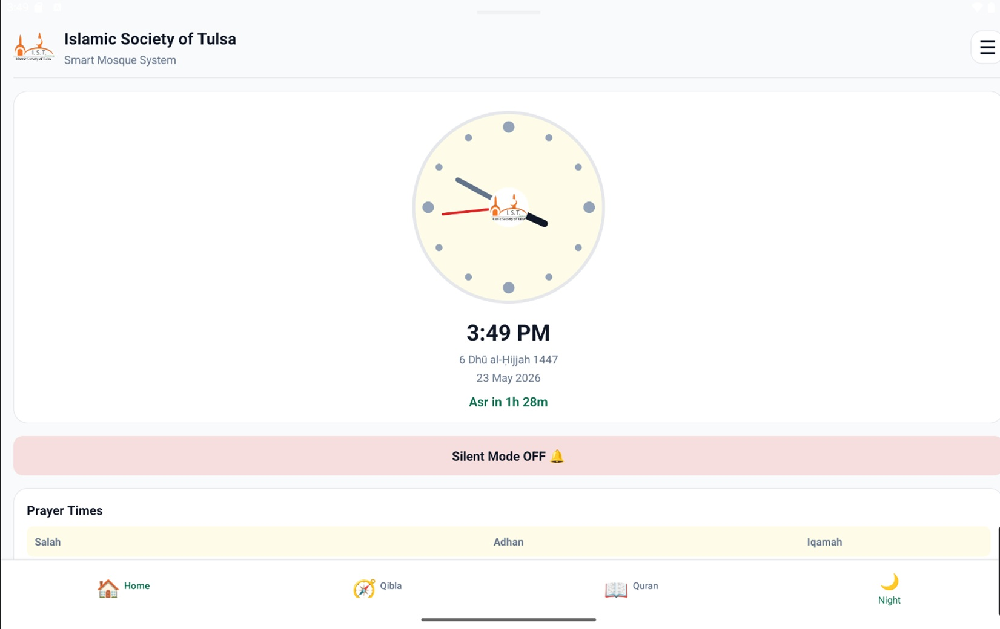
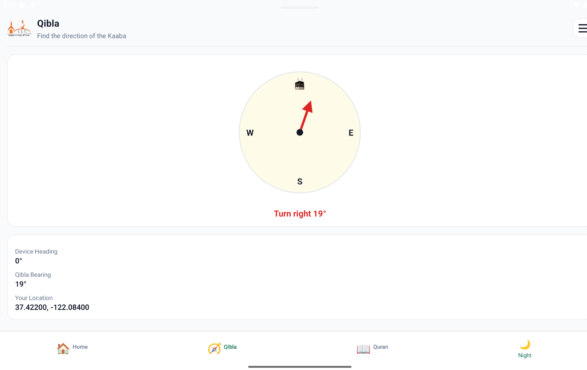
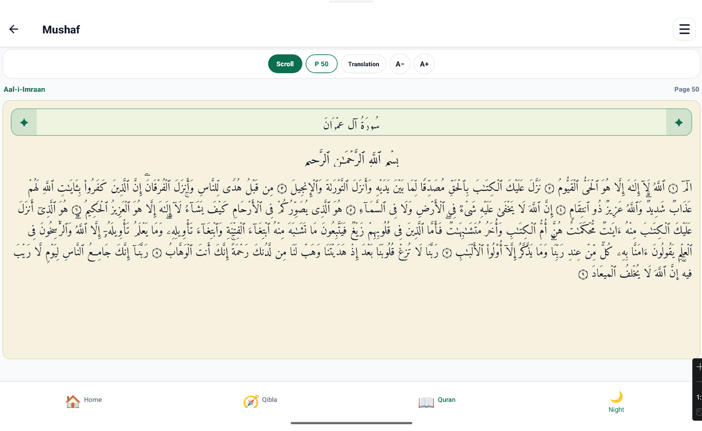
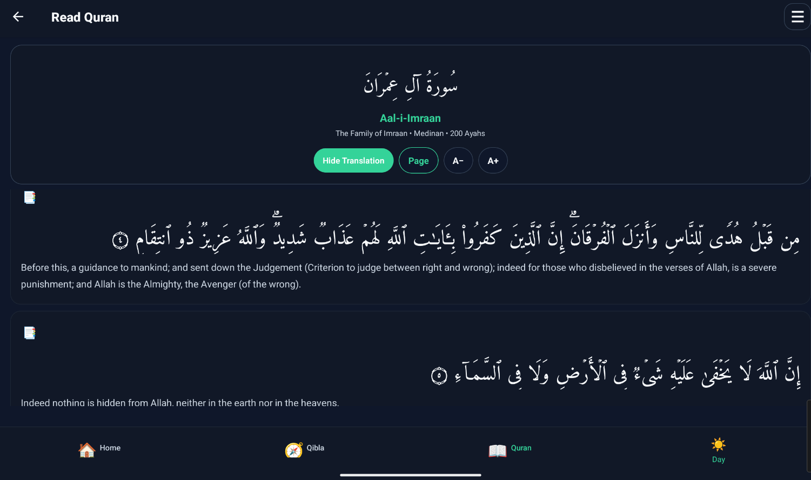
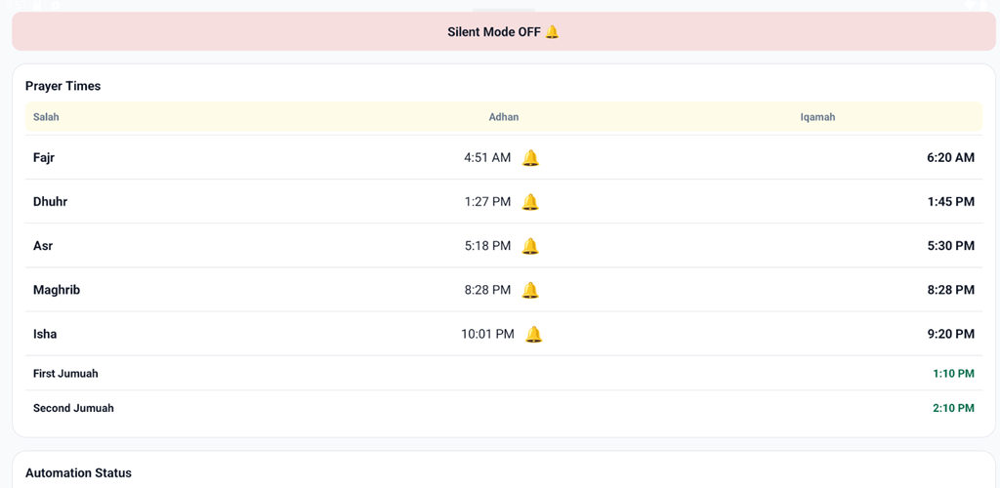

Islamic Society of Tulsa Mobile App
The Islamic Society of Tulsa Mobile App is a community-focused mobile application built to help mosque members access prayer information, Qibla direction, Quran reading, donations, and mosque resources from one place. The app also includes an automatic mobile silence feature using BLE integration with an ESP32 module, helping reduce phone interruptions during prayer inside the mosque.
Application Screenshots
A visual look at the mobile app experience, including the home screen, Qibla direction, Quran reader, and dark-mode Quran interface.

Community Home Screen
Main app screen designed to give users quick access to prayer information, Quran tools, Qibla direction, donations, mosque resources, and community features.




React Native App
Built as a mobile-first application for mosque members and Islamic community services.
BLE + ESP32
Integrated Bluetooth Low Energy communication with an ESP32 module for mosque-based automation.
Auto Silence Feature
Designed to automatically help mute or silence mobile devices during prayer time inside the mosque.
Islamic Tools
Includes Qibla direction, Quran reading, dark Quran mode, donation access, and mosque resources.
Problem
Mosque attendees need quick access to Islamic resources, prayer tools, donations, and community information. At the same time, ringing phones during prayer can interrupt worship and create distraction inside the mosque.
Solution
I developed a React Native mobile app that centralizes mosque services and integrates BLE communication with an ESP32 module to support automatic mobile mute or silence behavior when users enter the mosque environment.
Impact
The app improves access to Islamic Society of Tulsa resources while introducing a practical IoT-based solution that supports a quieter, more respectful prayer environment for the community.
Key Features
Automatic Mobile Silence
Designed an automatic silence workflow to help reduce phone interruptions during prayer by detecting mosque proximity or presence through BLE signals.
BLE and ESP32 Integration
Integrated the mobile app with an ESP32 module using Bluetooth Low Energy, connecting mobile software with a physical IoT device for mosque automation.
Prayer Information
Provides users with access to prayer-related information and mosque prayer resources in a mobile-friendly format.
Qibla Direction
Includes a Qibla direction tool to help users identify the direction of prayer directly from the app.
Quran / Mushaf Reader
Offers a Quran reading experience through a Mushaf-style interface designed for convenient mobile access.
Dark Mode Quran Reading
Supports a dark Quran interface to improve readability and comfort during night or low-light reading.
Donation Access
Provides a direct path for users to access mosque donation resources and support community programs.
Community-Focused Navigation
Organizes mosque and Islamic resources into a simple navigation structure so users can quickly find what they need.
Technology Stack
Mobile Framework
React Native for building a cross-platform mobile application experience.
IoT Integration
ESP32 module integrated with the mobile app for mosque-based automation.
Bluetooth Communication
Bluetooth Low Energy communication for detecting proximity and triggering automation behavior.
Islamic Features
Prayer resources, Qibla direction, Quran reading screens, and mosque-focused tools.
Frontend Architecture
Reusable components, screen-based navigation, mobile UI structure, and responsive layouts.
User Experience
Light and dark interface support, mobile-first layout, and simple access to community services.
What This Project Demonstrates
This project demonstrates my ability to build a real community-focused mobile application that combines React Native development, mobile UI design, Islamic utility features, BLE communication, ESP32 hardware integration, and practical IoT automation. It shows that I can connect software with physical devices to solve real-world community problems.